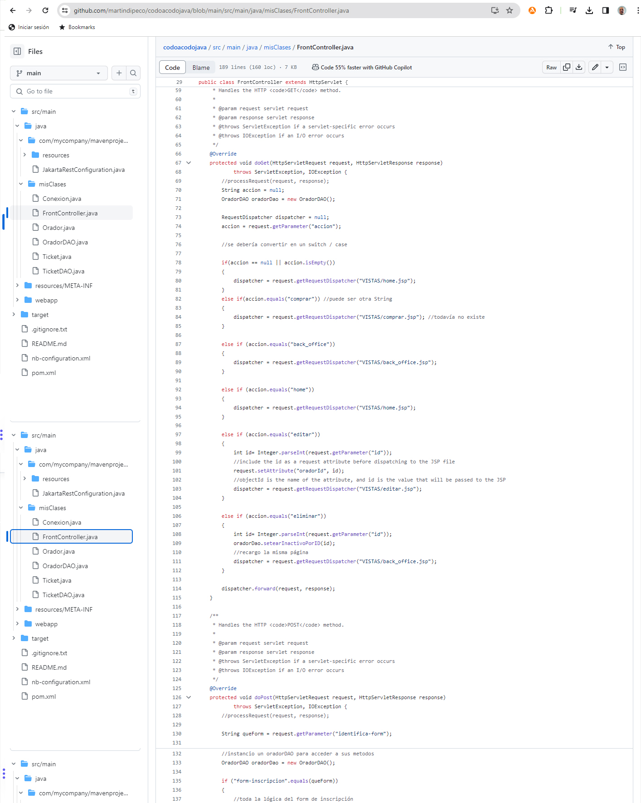

Conferencia
Aplicación web de registro de oradores desarrollada como desafío final del curso Full Stack Java de Codo-a-Codo. Maneja altas/bajas/edición de participantes.

Tecnologías utilizadas: Java, Maven Framework, SQL / MySQL WorkBench, IDE: Netbeans.
Video presentación:
Repositorio del código fuente en Github:

Descargar archivo:

Volver a Proyectos